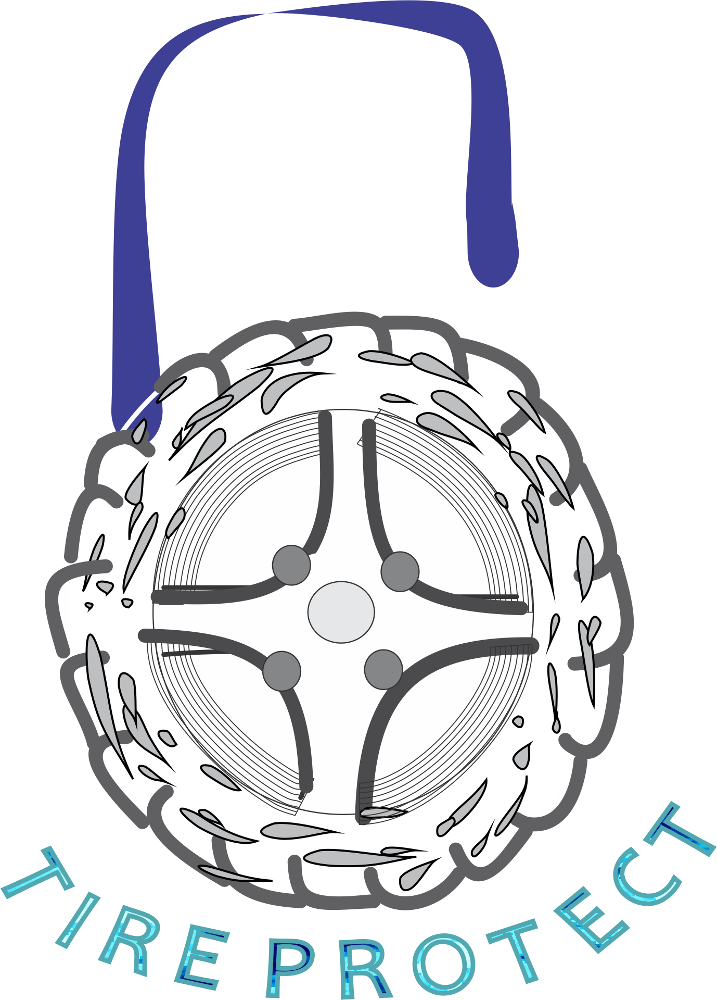

<!--
  Generated template for the InicioPage page.

  See http://ionicframework.com/docs/components/#navigation for more info on
  Ionic pages and navigation.
-->
<ion-header>
  <ion-navbar>
    <ion-title>Monitoreo</ion-title>
  </ion-navbar>
</ion-header>

<ion-content padding>

  
  <ion-card>
    
    <ion-card-header align="center">
      
      Activa o Desactiva Tu Sistema de Seguridad
    </ion-card-header>

    <ion-card-content>

      <button ion-button full color="secondary" (click)="activarAlarma()" >Activar</button>
      <button ion-button full color="danger" (click)="desactivarAlarma()" >Desactivar</button>

    </ion-card-content>

  </ion-card>

</ion-content>
